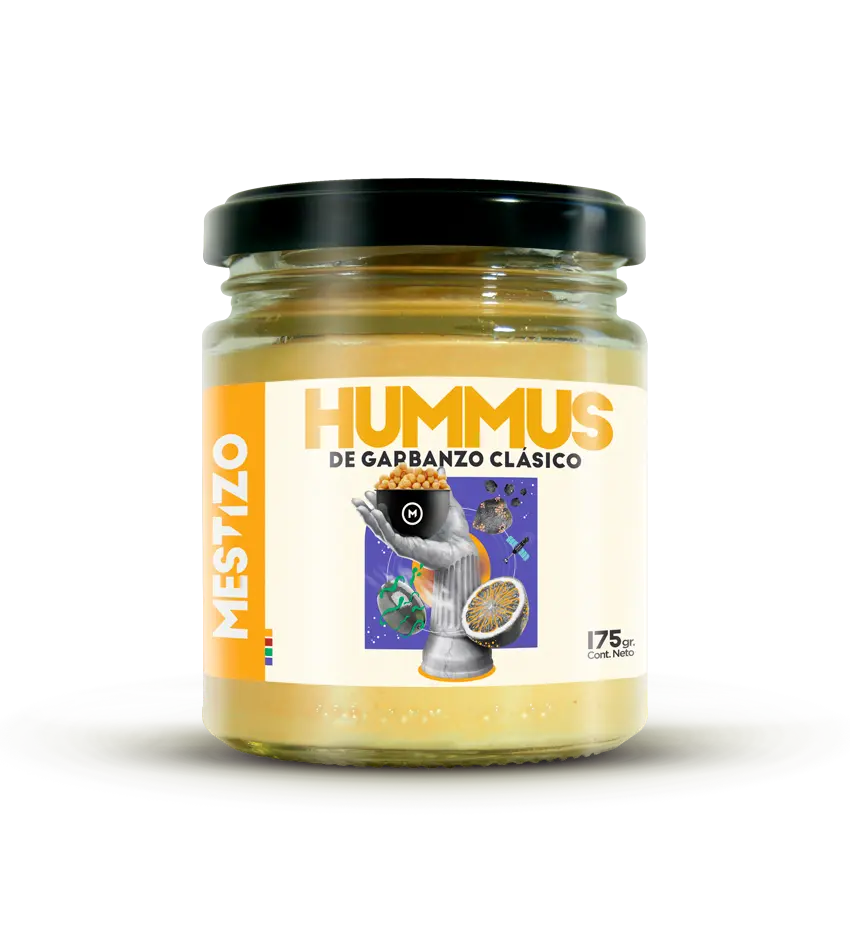
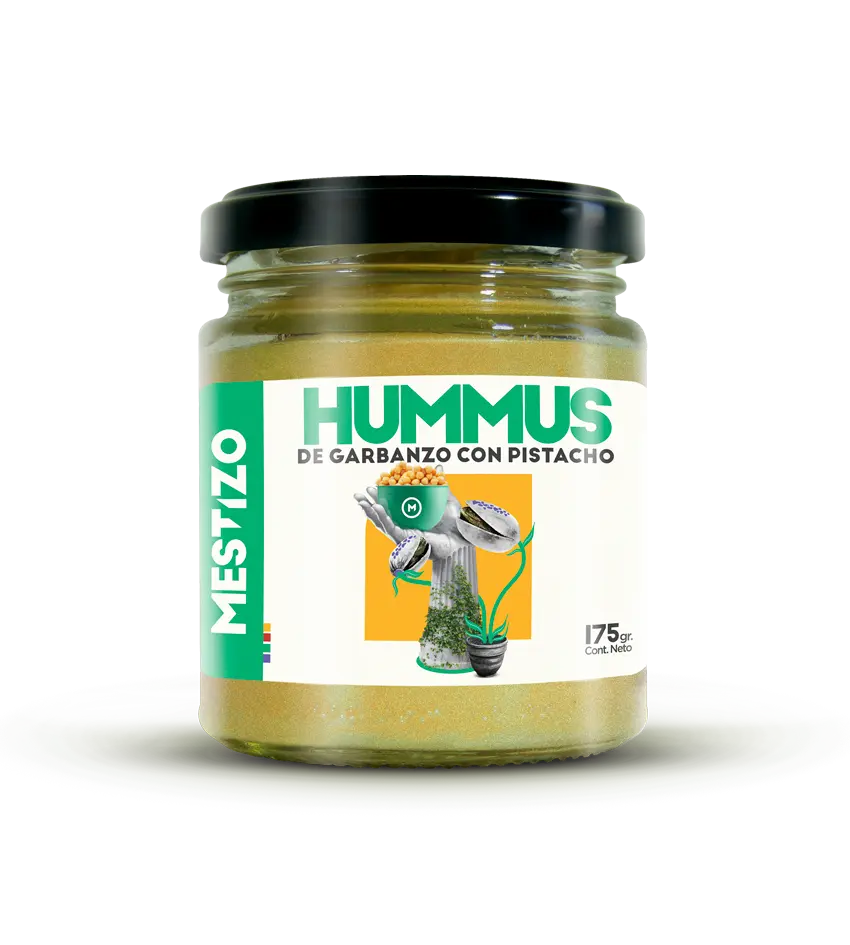

Clásico, sí. Pero fuera de lo común. Con una textura que te deja cantando onda: suave, suave, suave, bien suave (¿lo tenés al tema?) y un sabor que le queda bien a lo que se te ocurra. Y si no se te ocurre nada, lo bueno es que a cucharadas sigue siendo un hit.

HUMUS PICANTE
Hablás de este hummus y se te pianta un lagrimón. Quizás sea por la emoción de encontrar algo que te encanta, o por el picante ¿quién sabe? Pero de lo que sí podemos estar seguros, es que este sabor es un fuego.
HUMUS AJO NEGRO
Un hummus definitivamente etzótico. Como la palabra exótico, que por cierto, le queda mucho mejor que raro. Porque darle un toque japo a una receta de medio oriente puede ser peculiar, pero raro, raro sería que no hagamos un gusto así: etzótico.
HUMUS PISTACHO
Estar verde habla de inmadurez. Y vaya que es de inmaduro tirar fruta con los sabores; o como en este caso, fruto seco. Porque puede fallar decía Tusam, pero esta vez salió el truco. Y ahí nomás gritaron quiero retruco; ¡quiero vale cuatro carajo! Y yo quiero, porque este sabor el ancho de espadas.

PASTA TAHINI
Una Pasta bien Posta. 100% hecha con sésamo blanco tostado, para que tomes la posta, o sí te gusta de otro modo; agarres la pasta, y te pongas a hacer todo tipo de comidas. Porque la posta también, es que no es solo para el hummus.